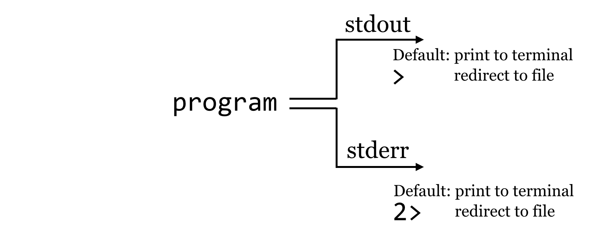
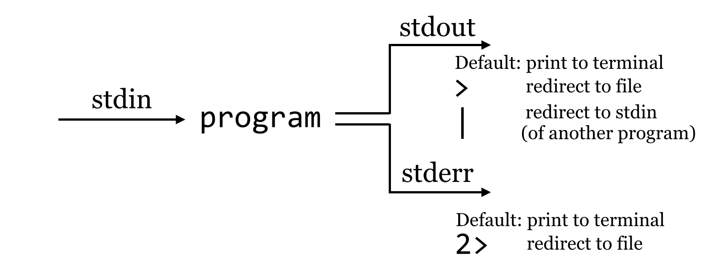
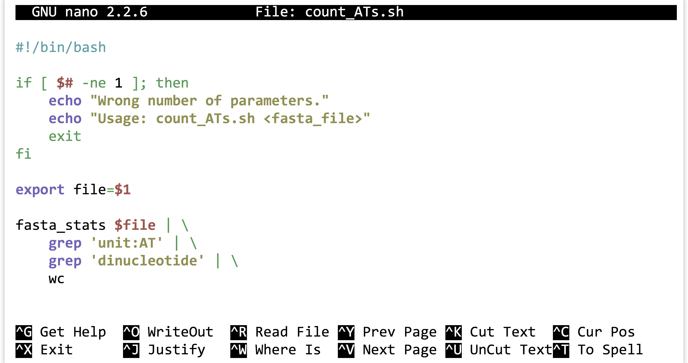

Chapter 9 The Standard Streams
In previous chapters, we learned that programs may produce output not only by writing to files, but also by printing them on the standard output stream. To further illustrate this feature, we’ve created a simple program called fasta_stats.py that, given a FASTA file name as its first parameter, produces statistics on each sequence. We’ll also look at the file pz_cDNAs.fasta, which contains a set of 471 de novo assembled transcript sequences from Papilio zelicaon, and pz_cDNAs_sample.fasta, which contains only the first two.
[oneils@mbp ~/apcb/intro]$ mkdir fasta_stats
[oneils@mbp ~/apcb/intro]$ cd fasta_stats
[oneils@mbp ~/apcb/intro/fasta_stats]$ wget https://raw.githubusercontent.com/oneilsh/apcb_second_edition/master/data/fasta_stats.py
--2021-09-28 09:23:59-- https://raw.githubusercontent.com/oneilsh/apcb_second_edition/master/data/fasta_stats.py
Resolving raw.githubusercontent.com (raw.githubusercontent.com)
...
[oneils@mbp ~/apcb/intro/fasta_stats]$ chmod +x fasta_stats.py
[oneils@mbp ~/apcb/intro/fasta_stats]$ wget https://raw.githubusercontent.com/oneilsh/apcb_second_edition/master/data/pz_cDNAs.fasta
...
[oneils@mbp ~/apcb/intro/fasta_stats]$ wget https://raw.githubusercontent.com/oneilsh/apcb_second_edition/master/data/pz_cDNAs_sample.fasta
...
[oneils@mbp ~/apcb/intro/fasta_stats]$ ls
fasta_stats.py pz_cDNAs.fasta pz_cDNAs_sample.fasta
We can run the fasta_stats.py program (after making it executable) with ./fasta_stats.py pz_cDNAs_sample.fasta.
[oneils@mbp ~/apcb/intro/fasta_stats]$ ./fasta_stats.py pz_cDNAs_sample.fasta
# Column 1: Sequence ID
# Column 2: GC content
# Column 3: Length
# Column 4: Most common 5mer
# Column 5: Count of most common 5mer
# Column 6: Repeat unit of longest simple perfect repeat (2 to 10 chars)
# Column 7: Length of repeat (in characters)
# Column 8: Repeat type (dinucleotide, trinucleotide, etc.)
Processing sequence ID PZ7180000031590
PZ7180000031590 0.378 486 ACAAA 5 unit:ATTTA 10 pentanucleotide
Processing sequence ID PZ7180000000004_TX
PZ7180000000004_TX 0.279 1000 AAATA 12 unit:TAA 12 trinucleotide
Based on the information printed, it appears that sequence PZ7180000031590 has a GC content (percentage of the sequence composed of G or C characters) of 37.8%, is 486 base pairs long, the most common five-base-pair sequence is ACAAA (occurring 5 times), and the longest perfect repeat is 10 base pairs long, caused by the pentanucleotide ATTTA, occurring twice.
Much like hmmsearch, this program writes its output to standard output. If we would like to save the results, we know that we can redirect the output of standard out with the > redirect.
[oneils@mbp ~/apcb/intro/fasta_stats]$ ./fasta_stats.py pz_cDNAs_sample.fasta > pz_sample_stats.txt
Processing sequence ID PZ7180000031590
Processing sequence ID PZ7180000000004_TX
[oneils@mbp ~/apcb/intro/fasta_stats]$ ls
fasta_stats.py pz_cDNAs.fasta pz_cDNAs_sample.fasta pz_sample_stats.txt
When we run this command, however, we see that even though the output file has been created, text is still printed to the terminal! If we use less -S to view the pz_sample_stats.txt file, we see that some of the output has gone to the file.
# Column 1: Sequence ID
# Column 2: GC content
# Column 3: Length
# Column 4: Most common 5mer
# Column 5: Count of most common 5mer
# Column 6: Repeat unit of longest simple perfect repeat (2 to 10 chars)
# Column 7: Length of repeat (in characters)
# Column 8: Repeat type (dinucleotide, trinucleotide, etc.)
PZ7180000031590 0.378 486 ACAAA 5 unit:ATTTA 10 pentanuc
PZ7180000000004_TX 0.279 1000 AAATA 12 unit:TAA 12
pz_sample_stats.txt (END)
So what is going on? It turns out that programs can produce output (other than writing to files) on two streams. We are already familiar with the first, standard output, which is by default printed to the terminal but can be redirected to a file with >. The second, called standard error, is also by default printed to the terminal but is not redirected with >.
By default, like standard output, standard error (also known as “standard err” or “stderr”) is printed to the terminal.
Because standard error usually contains diagnostic information, we may not be interested in capturing it into its own file. Still, if we wish, bash can redirect the standard error to a file by using the 2> redirect.25
[oneils@mbp ~/apcb/intro/fasta_stats]$ ./fasta_stats.py pz_cDNAs_sample.fasta > pz_sample_stats.txt 2> pz_sample_stats.err.txt
[oneils@mbp ~/apcb/intro/fasta_stats]$ ls
fasta_stats.py pz_cDNAs.fasta pz_cDNAs_sample.fasta pz_sample_stats.txt pz_sample_stats.err.txt
We might pictorially represent programs and their output as alternative information flows:

Filtering Lines, Standard Input
It can often be useful to extract lines from a file based on a pattern. For example, the pz_sample_stats.txt file contains information on what each column describes, as well as the data itself. If we want to extract all the lines that match a particular pattern, say, unit:, we can use the tool grep (for Global search for Regular Expression and Print), which prints to standard output lines that match a given pattern (or don’t match a given pattern, if using the -v flag): grep '<pattern>' <file>. To illustrate, we’ll first run fasta_stats on the full input file, redirecting the standard output to a file called pz_stats.txt.
[oneils@mbp ~/apcb/intro/fasta_stats]$ ./fasta_stats.py pz_cDNAs.fasta > pz_stats.txt
Looking at the file with less -S pz_stats.txt, we can see that informational lines as well as data-containing lines are stored in the file:
# Column 1: Sequence ID
# Column 2: GC content
# Column 3: Length
# Column 4: Most common 5mer
# Column 5: Count of most common 5mer
# Column 6: Repeat unit of longest simple perfect repeat (2 to 10 chars)
# Column 7: Length of repeat (in characters)
# Column 8: Repeat type (dinucleotide, trinucleotide, etc.)
PZ832049 0.321 218 CTTAA 4 unit:CGT 6 trinucle
PZ21878_A 0.162 172 ATTAA 8 unit:ATT 6 trinucle
PZ439397 0.153 111 TTAAT 5 unit:GAAAT 10 pentanuc
PZ16108_A 0.157 191 ATTAA 7 unit:ATT 6 trinucle
PZ21537_A 0.158 82 TTATT 3 unit:ATT 6 trinucle
PZ535325 0.108 120 AATTA 6 unit:TA 6 dinucleotide
...
To get rid of the informational lines, we can use grep to extract the other lines by searching for some pattern they have in common; in this case, the pattern unit: will do. Because grep prints its results to standard output, we will need to redirect the modified output to a file called, perhaps, pz_stats.table to indicate its tabular nature.
[oneils@mbp ~/apcb/intro/fasta_stats]$ grep 'unit:' pz_stats.txt > pz_stats.table
This time, less -S pz_stats.table reveals only the desired lines.
PZ832049 0.321 218 CTTAA 4 unit:CGT 6 trinucle
PZ21878_A 0.162 172 ATTAA 8 unit:ATT 6 trinucle
PZ439397 0.153 111 TTAAT 5 unit:GAAAT 10 pentanuc
PZ16108_A 0.157 191 ATTAA 7 unit:ATT 6 trinucle
PZ21537_A 0.158 82 TTATT 3 unit:ATT 6 trinucle
PZ535325 0.108 120 AATTA 6 unit:TA 6 dinucleotide
...
Rather than viewing the file with less, we can also count the number of lines present in the file with the wc tool, which counts the number of lines, words, and characters of input: wc <file>.
Working with the cleaned data table reveals that our program produced 21,131 characters broken into 3,297 words among 471 lines of data output.
[oneils@mbp ~/apcb/intro/fasta_stats]$ wc pz_stats.table
471 3297 21131 pz_stats.table
This sort of command-line-driven analysis can be quite powerful, particularly because many of these programs—like less, grep, and wc—can both print their results on standard output and read input from standard input rather than from a file. Standard input is the secondary input mechanism for command-line programs (other than reading from files directly). By default, standard input, or “stdin”, is unused.
How can we get input to a program on its standard input? It turns out that the easiest way to do so is to redirect the standard output of another program to it using the |, also known as the “pipe,” redirect (found above the Enter key on most keyboards). In this case, the data come in “on the left”:

To drive this home, we’ll first remove our pz_stats.table file, and then rerun our grep for unit: on the pz_stats.txt file, but rather than send the result of grep to a file with the > redirect, we’ll direct it straight to the standard input of wc with a | redirect.
[oneils@mbp ~/apcb/intro/fasta_stats]$ grep 'unit:' pz_stats.txt | wc
471 3297 21131
In this example, we’ve neither created a new file nor specified a file for wc to read from; the data are stored in a temporary buffer that is handled automatically by the shell and operating system. The less program can also read from standard input, so if we wanted to see the contents of the grep without creating a new file, we could run grep 'unit:' pz_stats.txt | less -S.
Recall that the fasta_stats program wrote its output to standard out, and because grep can read from standard input as well, we can process the entire FASTA file without needing to create any new files by using multiple such buffers:
[oneils@mbp ~/apcb/intro/fasta_stats]$ ./fasta_stats pz_cDNAs.fasta | grep 'unit:' | wc
When this command runs, the results printed by fasta_stats on standard error will still be printed to the terminal (as that is the default and we didn’t redirect standard error), but the standard output results will be filtered through grep and then filtered through wc, producing the eventual output of 471 lines.
At this point, the longish nature of the commands and the fact that our terminal window is only so wide are making it difficult to read the commands we are producing. So, we’ll start breaking the commands over multiple lines by ending partial commands with backslashes. Just as in the shell scripts we wrote at the end of chapter 7, “Using (Bioinformatics) Software”, using backslashes will let the shell know that we aren’t finished entering the command. However, the bash shell indicates that a command spans multiple lines by showing us a >, which shouldn’t be confused with the redirect character that we might type ourselves. The following example shows the exact same command in a more readable form broken over multiple lines, but the highlighted characters have not been typed.
[oneils@mbp ~/apcb/intro/fasta_stats]$ ./fasta_stats pz_cDNAs.fasta | \
> grep 'unit:' | \
> wc
A chain of commands like the above, separated by pipe characters, is often called a “pipeline.” More generally, though, a pipeline can describe any series of steps from input data to output data (as in the Muscle/HMMER series covered in chapter 7).
Counting Simple AT Repeats
Let’s expand on the small pipeline above to inspect just the “simple” AT repeats, that is, those that are the string “AT” repeated one or more times. We can start with what we have, but rather than just searching for unit:, we’ll modify the pattern to find unit:AT, and see what we get:
[oneils@mbp ~/apcb/intro/fasta_stats]$ ./fasta_stats pz_cDNAs.fasta | \
> grep 'unit:AT' | \
> less -S
The resulting output is close to what we hoped for, but not quite complete, as this pattern also matches things like unit:ATT and unit:ATG.
PZ21878_A 0.162 172 ATTAA 8 unit:ATT 6 trinucle
PZ16108_A 0.157 191 ATTAA 7 unit:ATT 6 trinucle
PZ21537_A 0.158 82 TTATT 3 unit:ATT 6 trinucle
PZ7180000031590 0.378 486 ACAAA 5 unit:ATTTA 10 pentanuc
PZ7180000031597 0.287 403 ATTAT 6 unit:ATTTTG 12 hexanucl
PZ7180000025478 0.516 829 TGATG 18 unit:ATG 18 trinucle
...
We probably want to further filter the output, but based on what pattern? In this case, those lines that match not only unit:AT, but also the term dinucleotide. Rather than attempt to produce a single complicated pattern that does this job in a single grep, we can add another grep call into the pipeline.
[oneils@mbp ~/apcb/intro/fasta_stats]$ ./fasta_stats pz_cDNAs.fasta | \
> grep 'unit:AT' | \
> grep 'dinucleotide' | \
> less -S
This command results in the output we want:
PZ7180000031598 0.209 81 AATAT 5 unit:AT 6 dinucleotide
PZ463243 0.226 97 TTGTA 3 unit:AT 4 dinucleotide
PZ7180000000106_T 0.246 1044 AAAAA 22 unit:AT 10 dinucleo
PZ17593_A 0.157 76 ATTAA 5 unit:AT 4 dinucleotide
PZ492422 0.144 90 ATTAA 5 unit:AT 4 dinucleotide
PZ22453_A 0.267 269 ATTAA 8 unit:AT 4 dinucleotide
...
Rather than run the results through less -S, we could instead use wc to count the simple (dinucleotide) AT repeats. There is an important concept at play here, that of iterative development, the idea that as we get closer to a solution, we inspect the results and repeat as necessary. Iterative development is a good strategy for many areas in life, but it is essential and pervasive in computing.
Once we’ve decided that we like the small computational process we have created, we might decide to encapsulate it and make it repeatable as a shell script, perhaps called count_ATs.sh.

The above script will need to be made executable and placed in a location referenced by $PATH, as will the fasta_stats program.
Exercises
Use
grepandwcto determine how many sequences are in the fileorf_trans.fastawithout creating any temporary files.How many sequence headers in the file
orf_trans.fastahave the term “polymerase”?Some of the sequence headers in
orf_trans.fastahave the phrase “Verified ORF” to indicate that the open reading frame has been verified experimentally. Some also have the term “reverse complement” to indicate that the ORF (open reading frame) is present on the reverse complement sequence of the canonical genome description. How many sequences are verified ORFs and are not on the reverse complement?The sequence headers in
orf_trans.fastahave information on the chromosome from which they originate, such asChr IorChr II. How many sequences are present on chromosome I?
The
tcshandcshshells unfortunately cannot natively separately redirect stdout and stderr to files. A potential workaround looks like:( ./fasta_stats pz_cDNAs_sample.fasta > pz_sample_stats.txt ) > & pz_sample_stats.err.txt. This command runs two independent redirects; using parentheses causes the redirect of stdout to happen first, then the further redirect of stderr can occur next. Howbash-compatible shells handle standard output and standard error is one of the primary reasons they are preferred over the oldercsh-compatible shells.↩︎